B2B · Partnerships · Events · Content · Website
Across Ruby Cup, Nomysh and Vonder, I've repeatedly built B2B marketing from close to zero: positioning, website copy, LinkedIn, paid activity, events, partnerships, opportunity generation and relationship building — the full machinery that gets a brand in front of the right decision-makers.
The role
Building B2B marketing from scratch has been a recurring part of my career, not a one-off project. At Nomysh, I evaluated and onboarded the platform's first B2B enterprise partners with no existing playbook to work from. At Ruby Cup, I inherited a business with no B2B sales collateral, no B2B content strategy and no coordinated external agency infrastructure, and built that machinery from the ground up. At Vonder, I brought the same approach to sourcing brand partnerships that improved the tenant experience.
Across all three, the work covered the same full journey: creating and writing website and proposition content, developing LinkedIn communications and paid activity, organising and attending events, sourcing partnership opportunities, representing the brand in relevant rooms, and building relationships with organisations that could create commercial or strategic value.
B2B website copy explaining Ruby Cup's distributor, nonprofit and corporate partnership routes.
View page ↗The most relevant B2B landing page: positioning Ruby Cup's CSR programme around employee wellbeing, sustainability and measurable social impact.
View page ↗Website
I created and wrote the B2B website content that gave potential partners a clear reason to work with Ruby Cup. The work covered partnership messaging, corporate social responsibility, workplace wellbeing, sustainability and social impact.
View Partner With Us ↗ · View CSR page ↗
The CSR proposition was particularly important: rather than presenting Ruby Cup simply as a product purchase, the messaging connected employee support with environmental benefits and the brand's buy-one-give-one social mission.
The wider redevelopment was managed across a 10-person cross-functional team and ultimately contributed to a reported 92% improvement in conversion rate through cleaner user journeys, stronger on-page copy and A/B testing.
Read the CSR pageLinkedIn · Organic + Paid
I wrote B2B-focused LinkedIn content for Ruby Cup, covering corporate partnerships, social impact, workplace wellbeing, sustainability and brand moments, and worked with LinkedIn advertising as part of the broader paid and organic activity.
The approach was to make the mission commercially legible: show what a partnership could actually achieve, make the impact tangible, and give potential partners a reason to start a conversation.
Scroll to see examples →
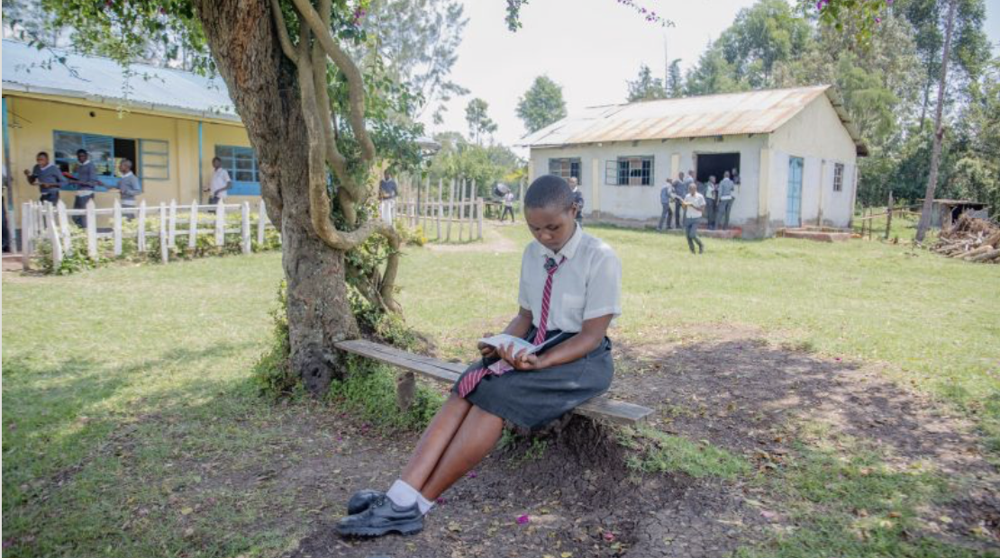
Partnership story using Ahmad Tea to show how product distribution, education and follow-up became a long-term impact programme.
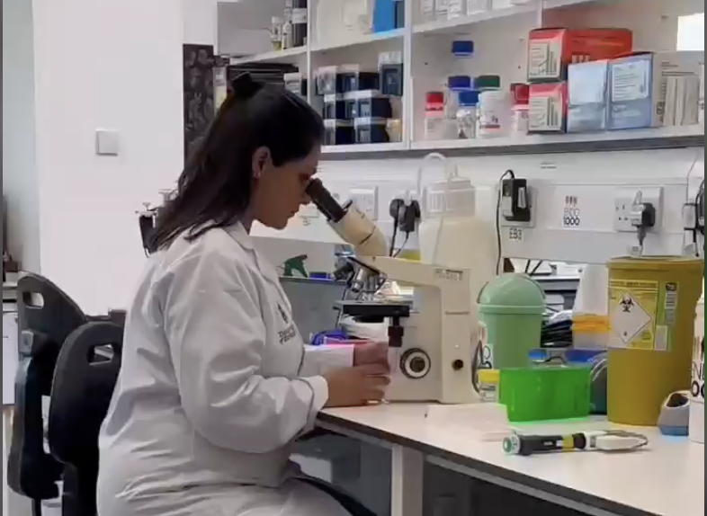
Corporate partnership storytelling connecting a commercial brand moment with Ruby Cup's social mission.
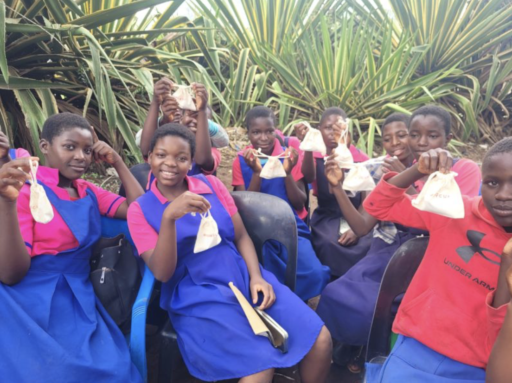
Translating social-enterprise activity and impact into a format designed for a professional audience.
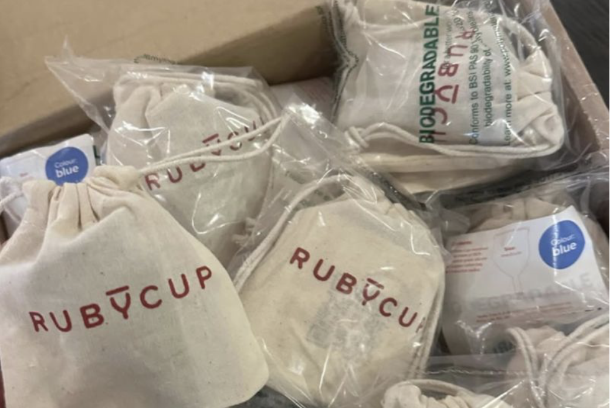
Thought leadership connecting menstrual health, CSR, ESG and inclusion to a business audience.
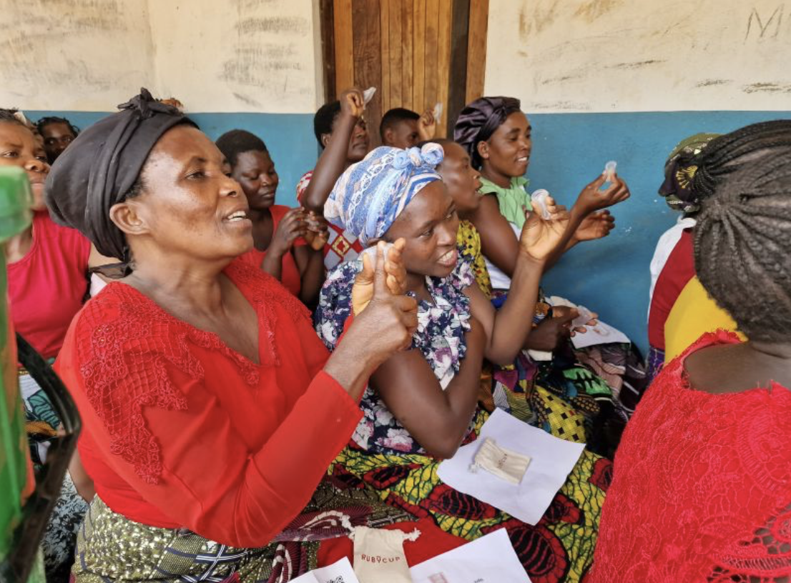
Data-led social storytelling that made Ruby Cup's impact relevant to a professional audience.
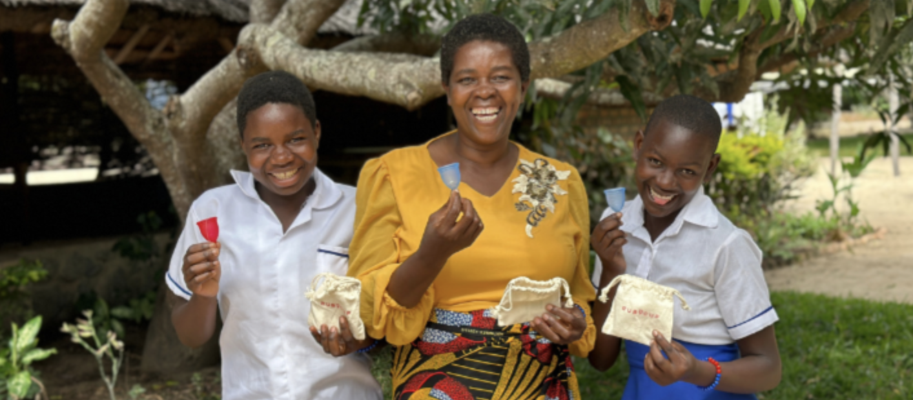
Brand-values content built to encourage audience engagement and reinforce Ruby Cup's wider purpose.
Events · Owned
I also hosted and produced events for Ruby Cup — not just turning up on the day, but managing the entire experience behind them.
One example was Ruby Cup's Menstrual Health Month activity, bringing together guests and partners around women's health, menstrual health and period equity, including organisations such as Bupa, Human Practice Foundation, Danish-UK Association and Eeko Media, alongside NGO and health-sector partners.
Event examples →
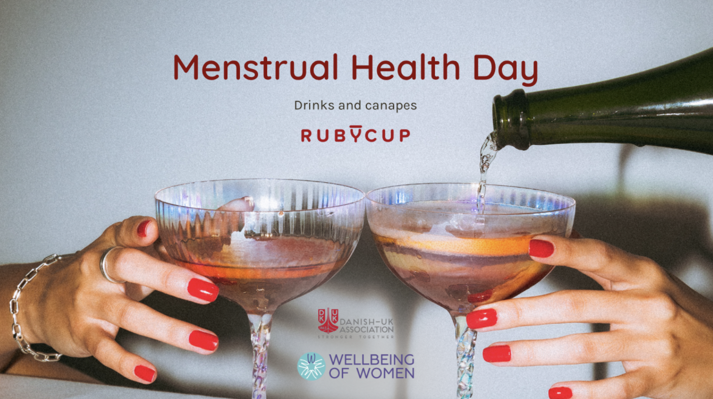
The event page for Ruby Cup's Menstrual Health Month gathering. LinkedIn Events don't support embedded previews, so this opens directly on LinkedIn.
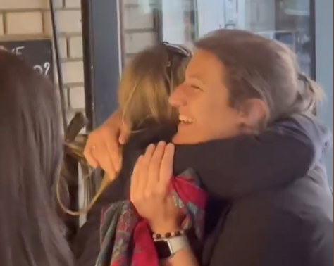
Video recap from the event, showing the guests, partners and organisations involved.
Events · Representation
Not every opportunity starts with a direct inbound lead. I actively looked for events and communities where the brand could meet relevant corporate, sustainability, wellbeing and partnership audiences, and represented it in those spaces with the aim of developing B2B relationships.
That meant identifying useful rooms, attending on behalf of the brand, starting conversations, explaining the proposition and following up on potential opportunities rather than treating events as passive brand exposure.
Examples of brand representation →
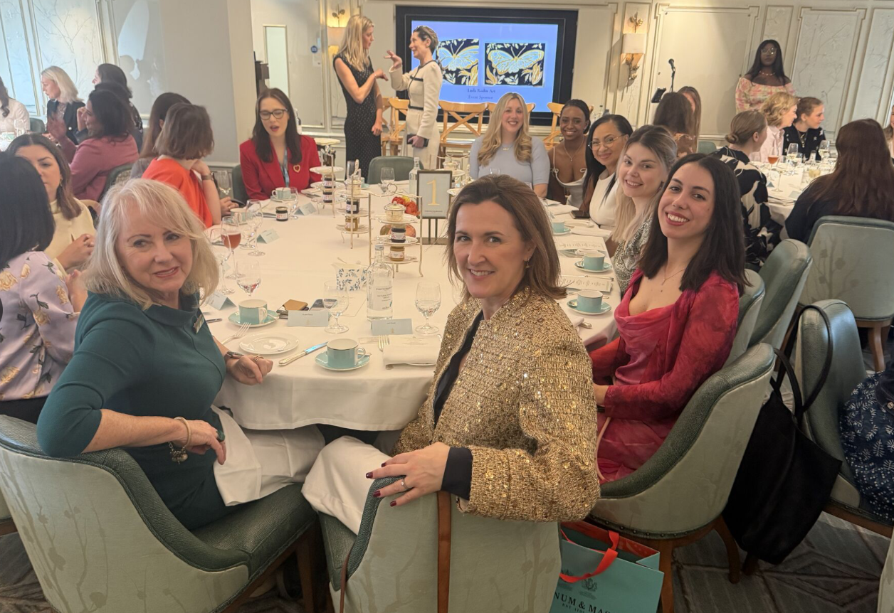
Ruby Cup at an event bringing together 65 inspiring women for conversation, networking and an afternoon tea focused on gender equality. (This post doesn't support embedding — opens on LinkedIn.)
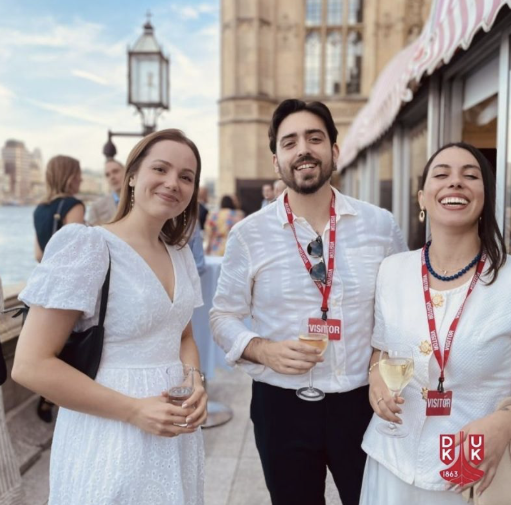
An example of using professional events and communities to put Ruby Cup in front of potential partners and collaborators. (Shortened link — opens on LinkedIn.)
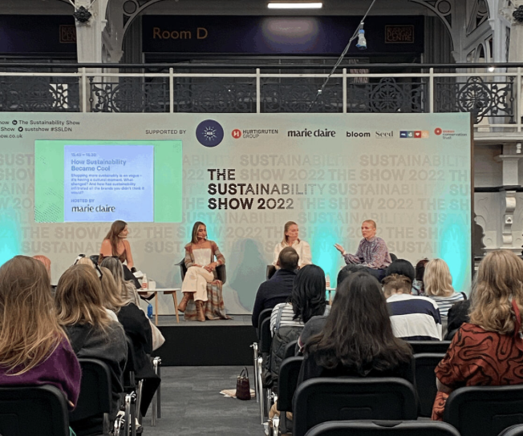
Content and networking around the intersection of business, sustainability and design.
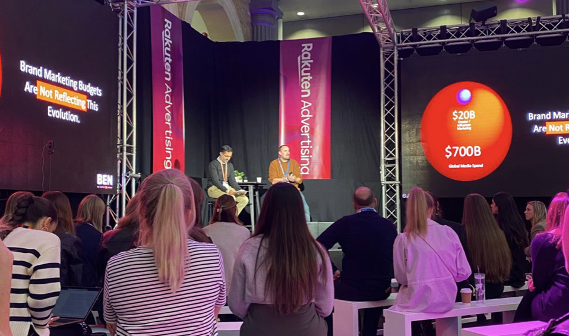
Attending the Influencer Marketing Show, building visibility and relationships around marketing, creators and commercial partnerships. (This post doesn't support embedding — opens on LinkedIn.)
Opportunity generation
A large part of the role was proactively finding opportunities that could put the brand in front of audiences it would otherwise struggle to reach: podcasts, industry events, founder conversations, community platforms and other relevant partnerships.
I sourced opportunities, made the initial connection, negotiated the collaboration and helped turn the opportunity into a usable brand moment.
Examples →
The goal was never simply "more mentions." It was to create a pipeline of credible contexts where the brand could be relevant to decision-makers, partners, founders and communities already interested in sustainability, women's health, workplace wellbeing and social impact.
Vonder · B2B partnerships
I brought the same partnership-building approach to Vonder, looking for B2B partners that could either improve tenants' perception and experience of the brand or help make the business more sustainable.
The work involved identifying relevant brands, approaching potential partners, shaping the value exchange and getting collaborations into the tenant experience.
Secured Get Homethings to provide welcome kits for new tenants, creating a stronger arrival experience and adding value from day one.
Partnered with Cheeky Panda to provide toilet paper across the office and apartments, supporting a more sustainable everyday tenant experience.
Liaised with local cafés and bars to create discounts and perks for tenants, strengthening the connection between Vonder properties and their neighbourhoods.
Secured a Tulu automated storage solution as another amenity designed around making the resident experience more convenient.
Partnership examples →
Writing
B2B and stakeholder audiences expect rigour as well as narrative. These pieces show how I've translated policy, impact data and business economics into content that holds up for a professional reader.
Editorial · Danish-UK Association
Editorial by Elena Picchi, Marketing Director at Ruby Cup — guest editorial for a Danish-UK business audience
Policy & Impact · Ruby Cup
Period pants are cheaper in 2024 after VAT tax got axed — breaking down policy change into consumer and business impact
Policy Analysis · Ruby Cup
Tampon tax: Italy to raise VAT on sanitary products — economic analysis translated for a mass audience
Impact Report · Ruby Cup
Taking action: Ruby Cup's CSR and social impact report — communicating investment in social enterprise to stakeholders
B2B Guide · Nomysh
How to successfully pitch to brands in 2023 — practical B2B guide, also delivered as a hosted webinar
B2B Analysis · Nomysh
The economics of UGC creation: what's your plan B? — translating financial risk into accessible advice
What this work demonstrates
Across Ruby Cup, Nomysh and Vonder, the common thread was finding a useful intersection between a brand and another organisation's audience, product or expertise — then turning that intersection into something tangible.
Results
The result across these roles was a broader B2B marketing engine each time: clearer website propositions, consistent professional content, paid and organic LinkedIn activity, owned events, external event representation, partnership opportunities and a network of organisations that could extend each brand's reach.
At Ruby Cup, the wider website redevelopment improved conversion by 92%, while the B2B programme moved the brand from having effectively no enterprise infrastructure to securing its first corporate clients — the same pattern I'd already run once before at Nomysh.
"The challenge was building the machinery to tell it."
That is ultimately what this work has been about, role after role: building the machinery while creating the opportunities for a mission-led brand to be visible, credible and commercially relevant.